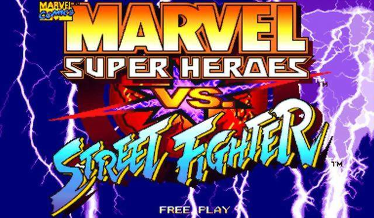

All my pages have the same background which is a moving gif file from a video game called MarvelSuperHeroes vs Street Fighter or MSH Vs SF from Capcom. which I wanted to feel as flowness between all of the pages and I wanted to represent who I am, A big fighting game fan. Starting from my index page it has every link to every other page which works and can be clicked on to move to the other pages. From there is my title (Welcome to my first website design) which is in white italic. Afterwards is the first paragraph describing a little bit about myself and my background. Telling a little into how I liked a certain type of artstyle and how it influenced my art style in interior design afterwards is a moving .gif file (Rogue from Xmen vs Street Fighter) to break up the paragraphs and looks interesting on the page.

After the gif file is my second paragraph (Your interests in technology and coding) which I explain what my interests in the technology field are. These include helping the eldery with volunteering and explaining that this is my first time coding. After the second paragraph is another .gif file (Chun li from Street Fighter) followed on by my third and last paragraph (What made you interested in Code Nation) which explains how I was interested in Code Nation, explaining that even though I am disabled I can still do things but it might take more time, followed on by another .gif file (Sakura from Street Fighter) then the link to Code Nation and the logo for Code Nation at the bottom.
The next page is simpler in design, it still has the links at the top (which all of the pages will have) followed by the title to the page in Italic white (which is used all the way through the website to allow easy viewage. Following onwards is the main paragraph to Unit 1.1 (Describe the Purpose of IT in Modern Businesses) then starts the first and second references with notifications on what the links are. (both links are fully functable)
The next page afterwards still has the links at the top for all of the pages, followed by the title of the second page. (Unit 1 1.2 Describe Methods Skills and Resources) followed by the start of the paragraph to the unit. Between the first and second paragraph is a picture of an electronic brain (brain.jpg) to help with understanding of the subject. Lastly is the use of the Sakura gif. (Street Fighter)
The page after that again has the taskbar to allow the user to switch between the pages easily. Followed by the title of the page (Unit 1 1.3 Plan and carry out tasks) afterwards is the paragraph explaining how I will be doing unit 1 1.3 for example the use of trello and slack etc, followed by a working link to my trello board (fully functional) and a logo of trello itself.
Unit 1 1.4 follows onwards from the page before, like with all pages. It starts with the taskbar leading onwards to the title of the page (Unit 1 1.4 Describe the risks) the main paragraph of the page is afterwards explaining the units information such as different OS and so on. Afterwards there is a picture of Apple’s OS logo to help go with the paragraph and a link(fully functable) to the reference used for the unit. Lastly on this page I decided to add a moving .gif file (psylockemarvelassist.gif) to help break up the page.
Following onwards from Unit 1 1.4 is 1.5 with again starts off with the taskbar at the top, followed by the title of the page (Unit 1.5 Describe how you would go about selecting IT systems) from there is the paragraph explaining how I would go about selecting the right systems. After the paragraph is a picture of Capcom’s RE engine then followed by a reference link (fully functable)
Unit 1.6 again starts off with the main task bar leading towards to the title of the page (Unit 1 1.6) followed by two paragraphs explaining how I felt about using technologies and archiving. After the first two paragraphs there is an image of Visual Studio Code followed immediately by the logo for Xcode. Lastly there is a final paragraph explaining how I should use git and github more often.
Following on from the last page (Unit 1.7) starts off with the taskbar then leads onto the title of the actual page. The next paragraph starts to explain how the GDPR could impact digital pages which leads into a image (gdpr) showing what GDPR means. Following the image is the last paragraph on this page then the reference (fully works) and the before talked about rogue gif at the bottom of the screen to break up the page.